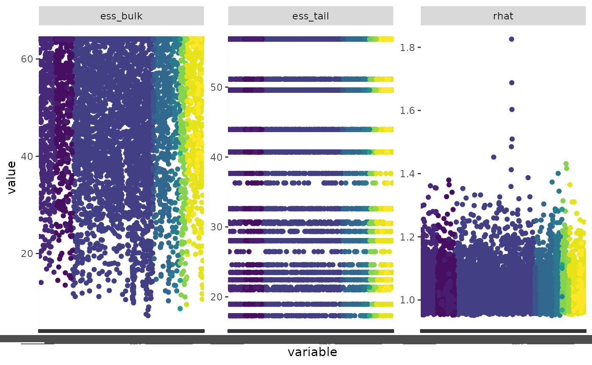

First make sure you have the BBS data downloaded
have_bbs_data()
#> Expected BBS state data 2022: '/home/runner/.local/share/R/bbsBayes2/bbs_state_data_2022.rds'
#> [1] TRUEIf not, install with fetch_bbs_data()
Let’s start by running a quick (and dirty) model looking at the Pacific Wren.
m <- stratify(by = "bbs_cws", sample_data = TRUE) %>%
prepare_data() %>%
prepare_model(model = "first_diff") %>%
run_model(iter_sampling = 20, iter_warmup = 20, chains = 2)Or we can use the example model included in bbsBayes2,
pacific_wren_model
m <- pacific_wren_modelNow we can calculate our convergence metrics
conv <- get_convergence(m)
conv
#> # A tibble: 10,495 × 5
#> variable_type variable rhat ess_bulk ess_tail
#> <chr> <chr> <dbl> <dbl> <dbl>
#> 1 lp__ lp__ 1.03 21.9 49.6
#> 2 strata_raw strata_raw[1] 1.01 64.1 56.9
#> 3 strata_raw strata_raw[2] 1.01 64.1 17.3
#> 4 strata_raw strata_raw[3] 0.987 43.2 22.4
#> 5 strata_raw strata_raw[4] 1.05 31.2 56.9
#> 6 strata_raw strata_raw[5] 0.959 64.1 49.6
#> 7 strata_raw strata_raw[6] 1.02 49.0 43.9
#> 8 strata_raw strata_raw[7] 0.978 64.1 56.9
#> 9 strata_raw strata_raw[8] 1.08 63.6 23.5
#> 10 strata_raw strata_raw[9] 1.00 64.1 49.6
#> # … with 10,485 more rowsWow, there are a lot of variables here.
We can visualize this by transforming the data frame and using ggplot2
tconv <- tidyr::pivot_longer(conv, cols = c(ess_bulk, ess_tail, rhat))
ggplot(data = tconv, aes(x = variable, y = value, colour = variable_type)) +
geom_point() +
facet_wrap(~name, scales = "free_y") +
scale_colour_viridis_d(guide = "none")
#> Warning: Removed 123 rows containing missing values (`geom_point()`).
We can also choose to extract only some variables. To see which ones
are available, use the get_model_vars() function.
get_model_vars(m)
#> [1] "lp__" "strata_raw" "STRATA" "eta"
#> [5] "obs_raw" "ste_raw" "sdnoise" "sdobs"
#> [9] "sdste" "sdstrata" "nu" "sdbeta"
#> [13] "sdBETA" "BETA_raw" "beta_raw" "E"
#> [17] "beta" "yeareffect" "BETA" "YearEffect"
#> [21] "strata" "phi" "n" "retrans_noise"
#> [25] "retrans_obs" "retrans_ste" "Hyper_N" "adj"We can also extract summary information from the model via the helper
function get_summary() (wrapper for
cmdstanr::summary())
get_summary(m)
#> # A tibble: 10,495 × 10
#> variable mean median sd mad q5 q95 rhat ess_b…¹
#> <chr> <dbl> <dbl> <dbl> <dbl> <dbl> <dbl> <dbl> <dbl>
#> 1 lp__ -1.38e+4 -1.38e+4 38.9 42.2 -1.38e+4 -1.37e+4 1.03 21.9
#> 2 strata_raw[1] -9.99e-1 -1.05e+0 0.351 0.396 -1.51e+0 -4.82e-1 1.01 64.1
#> 3 strata_raw[2] -1.99e-1 -1.63e-1 0.205 0.225 -4.86e-1 4.95e-2 1.01 64.1
#> 4 strata_raw[3] -1.36e-1 -6.58e-2 0.543 0.602 -1.06e+0 6.97e-1 0.987 43.2
#> 5 strata_raw[4] 1.57e+0 1.57e+0 0.267 0.221 1.03e+0 2.00e+0 1.05 31.2
#> 6 strata_raw[5] -1.48e-1 -1.11e-1 0.260 0.287 -5.78e-1 2.22e-1 0.959 64.1
#> 7 strata_raw[6] 1.26e+0 1.31e+0 0.638 0.717 6.03e-2 2.41e+0 1.02 49.0
#> 8 strata_raw[7] -1.12e+0 -1.22e+0 0.456 0.346 -1.64e+0 -3.86e-1 0.978 64.1
#> 9 strata_raw[8] 1.89e+0 1.94e+0 0.355 0.302 1.12e+0 2.35e+0 1.08 63.6
#> 10 strata_raw[9] -8.93e-1 -9.04e-1 0.258 0.263 -1.24e+0 -4.50e-1 1.00 64.1
#> # … with 10,485 more rows, 1 more variable: ess_tail <dbl>, and abbreviated
#> # variable name ¹ess_bulk